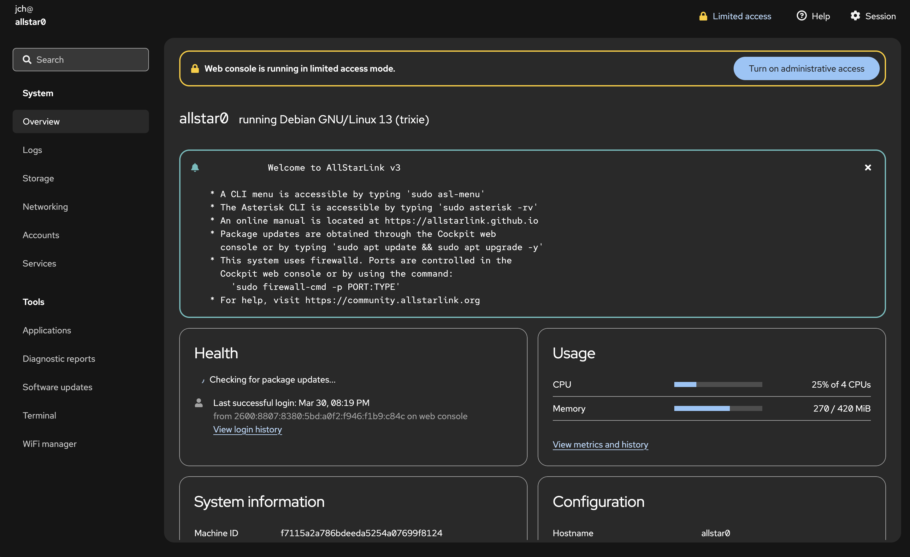
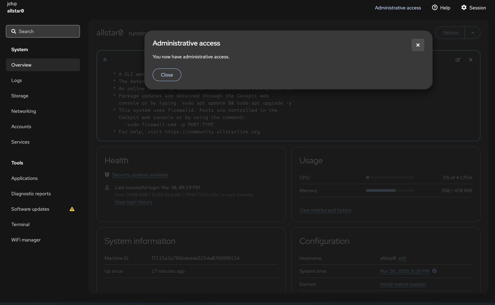

# AllstarLink ### <!-- .element: style="font-size: 0.7em;" --> Repeaters, Hotspots and Nodes, Oh My!  <!-- .element: style="height: 150px; border: none; background: none; box-shadow: none;" --> Jeffrey Honig — N2VLV [n2vlv.net](https://n2vlv.net/) — [n2vlv@honig.net](mailto:n2vlv@honig.net) Note: Welcome everyone. Today we'll be talking about AllStar Link, a VoIP-based system for linking amateur radio repeaters and nodes. --- ## What is AllstarLink? - VoIP interconnect system for amateur radio - Based on Asterisk PBX software with the **app_rpt** module - Links repeaters, hotspots, and nodes worldwide - Open source and free to use - Operates over standard internet — no special network required - Free node registration at allstarlink.org Note: AllstarLink uses the open-source Asterisk telephony engine adapted for amateur radio use via the app_rpt module written by Jim Dixon W6JL. Anyone can register a node for free at allstarlink.org. --- ## History / Background - Created by Jim Dixon, W6JL - Built on the Asterisk open-source PBX - First released in the early 2000s - Now maintained by the AllstarLink community Note: Jim Dixon saw the potential of using VoIP and open-source telephony software to link amateur radio systems. --- ## Compare to EchoLink and IRLP - **EchoLink** — PC/mobile app, simple to use, closed source - **IRLP** — Dedicated hardware, Linux-based, node-to-node - **AllstarLink** — Most flexible, open source, Asterisk-based - AllstarLink can link to EchoLink nodes Note: Compare the three main VoIP linking systems. Each has trade-offs in complexity vs. flexibility. --- ## AllstarLink Network  <!-- .element: style="height: 450px; border: none; box-shadow: none;" --> US nodes shown — worldwide network at [stats.allstarlink.org](https://stats.allstarlink.org/) Note: The network has grown significantly since the early 2000s. The stats page at stats.allstarlink.org shows live connected nodes, with an interactive map of node locations across the US and internationally. --- ## Uses - Personal hotspot - Linking two or more repeaters - Conference bridges / hubs (radioless nodes) - Remote base station (including access to a remote repeater) Note: AllstarLink is versatile — from a simple hotspot on your desk to linking repeater networks across states or countries. Conference bridges and hubs are radioless nodes — no radio required, just software routing audio between connected nodes. --- ## Node Types  <!-- .element: style="height: 480px; border: none; box-shadow: none;" --> Note: Four node types: Hotspot Node (HTs via internet), Radio Node (remote repeater access), Repeater Node (full repeater system), and Conference Bridge (virtual hub, radioless). --- ## Uses in Practice <!-- .slide: style="font-size: 0.75em;" --> - **Scheduled nets** — hundreds of recurring nets on AllstarLink hubs (e.g. [allstarnets.org](https://allstarnets.org/)) - **Remote repeater access** — key into your home repeater from anywhere in the world - **Emergency communications** — ARES/RACES groups use AllstarLink for backup linking and interoperability - **Skywarn** — weather nets often coordinate via AllstarLink hubs - **Club coordination** — link club repeaters during events, contests, or public service - **Portable/travel operation** — connect a Pi hotspot from anywhere to your home repeater - **Monitoring/listening** — tune into nets and repeaters worldwide without transmitting Note: allstarnets.org maintains a directory of scheduled nets running on AllstarLink — a great resource to point new users to. Remote access is a killer feature: if you're traveling, a hotspot node lets you participate in your local repeater's nets from a hotel room anywhere in the world. EmComm groups value AllstarLink for its resilience and ability to bridge otherwise isolated repeaters. --- ## Hubs and Nets - Hubs are always-on conference nodes — equivalent to **Wires-X rooms/nodes** - Connect to a hub to talk with a group - Regional and special-interest nets meet on hub nodes - Examples: WIN System, HubNet, etc. Note: Hubs on AllstarLink serve the same role as Wires-X rooms — a central always-on node that multiple stations connect to for group communication. Hubs provide community gathering points for scheduled and informal nets. --- ## A Hub Network: HubNet UK  <!-- .element: style="height: 430px; border: none; box-shadow: none;" --> Nodes connected to the HubNet UK hub (nodes 4334 & 3143) Note: This is a real-time connection map of HubNet UK, a UK-based AllstarLink hub network. Each oval represents an individual node — repeaters, hotspots, and linking nodes — all connected into the central hub nodes 4334 and 3143. The tree structure illustrates how a hub aggregates many nodes into a single conference point. Highlighted nodes (pink/red) are typically sub-hubs or nodes with their own connections branching further. --- ## Architecture - Servers run Asterisk with app_rpt module - Nodes connect to radios via audio interfaces - Nodes register with the AllstarLink network - Audio transported over the internet as VoIP - Two channel drivers for USB interfaces: **simpleusb** and **usbradio** Note: Radio → Interface → Computer/Node → Internet → Node → Interface → Radio. The choice of channel driver (simpleusb vs. usbradio) depends on your radio's capabilities. --- ## simpleusb vs. usbradio <!-- .slide: style="font-size: 0.65em;" --> | | simpleusb | usbradio | |---|---|---| | **Signal detection** | Hardware COS/CTCSS pin | DSP in software | | **Squelch signal** | Required | Not required | | **Audio processing** | Minimal | Full DSP (de-emphasis, filtering) | | **CTCSS decode** | Hardware only | Software decode | | **CPU usage** | Low | Higher (DSP processing) | | **Best for** | Radios with COS output | Radios without squelch signal | - Use **usbradio** when your radio provides no squelch/COS signal — it detects audio activity in software via DSP - Use **simpleusb** for simpler setups where the radio provides a hardware squelch output - **usbradio** requires more CPU — consider this on low-power hardware like older Raspberry Pis Note: simpleusb relies on a hardware carrier/tone squelch signal from the radio to know when audio is present. usbradio uses software DSP to detect incoming audio, making it necessary for radios (like many HTs) that don't expose a COS or squelch output on their accessory connector. The DSP processing in usbradio has a higher CPU cost — worth noting for Raspberry Pi Zero or older Pi hardware. --- ## Addressing - Each node gets a unique node number - Originally 5-digit numbers - Now also 6-digit numbers as the network grows - Node numbers used for connecting and DTMF commands Note: Node numbers are how you identify and connect to other stations. --- ## Hardware — Server - Raspberry Pi (most common for hotspots) - Any Linux-capable x86 computer - Low-power SBCs (Orange Pi, Rock Pi, etc.) - Internet connection required (except for a repeater) Note: Almost any Linux computer can run AllstarLink. Raspberry Pi is the most common choice for hotspots due to size, cost, and community support. --- ## Hardware — Sound Cards and Interfaces - **DigiRig** — Clean, purpose-built USB audio/PTT interface - **TOADS DI** — Digital interface for AllstarLink - **AIOC** — All-In-One Cable, integrates directly with radio - URI (USB Radio Interface) — legacy but still used - Modified CM108-based adapters --- ## Hardware — Radios and All-in-One - Any FM radio with accessory/speaker-mic connector - Mobile radios common for repeater/remote base use - HT (handheld) with cable for hotspot use - **All-in-one combos:** HotspotRadioUSB (radio + interface combined) Note: All-in-one solutions simplify the build — everything in one package. HotspotRadioUSB is a popular integrated option. --- ## Software - **ASL3** — Current official AllstarLink distribution - **HamVoip** — Alternative distribution, Arch Linux based - Both based on Asterisk with app_rpt - Debian/Raspberry Pi OS (ASL3) vs. Arch Linux (HamVoip) Note: Two main software options. ASL3 is the current community standard. HamVoip is an alternative with its own following. --- ## Setting Up AllstarLink 1. **Sign up** at [allstarlink.org/register](https://allstarlink.org/register/index.php) 2. **Wait for approval** — license is verified by the helpdesk 3. **Log in** and complete account settings 4. **Request 6-digit node numbers** via Node Management (NNX) 5. **Add a server** — the computer running ASL3 6. **Add a node** — your radio interface on that server Note: Walk through each step in the portal. Steps 5 and 6 must be done in order — you need a server before you can add a node to it. --- ## Login: Account Settings  <!-- .element: style="height: 500px; border: none; box-shadow: none;" --> Note: After logging in, verify your account settings — callsign, email, and contact info. Your PIN is auto-generated and used for phone access. --- ## Add a Server: Server List  <!-- .element: style="height: 500px; border: none; box-shadow: none;" --> Note: The Servers page lists all servers under your account. Click "Add New Server" to create one. A server is the AllstarLink name for the computer running Asterisk + app_rpt. --- ## Add a Server: Server Settings  <!-- .element: style="height: 500px; border: none; box-shadow: none;" --> Note: Fill in server name, location, and latitude/longitude. IAX port defaults to 4569 UDP — must be open on your firewall. Proxy IP is rarely needed. --- ## Add a Node: Node List  <!-- .element: style="height: 500px; border: none; box-shadow: none;" --> Note: The Nodes page shows all registered nodes. NNX nodes (6-digit) are shown with the NNX column marked Yes. Click a node number to edit it. Use Node Management to request new numbers or extend to 6 digits. --- ## Add a Node: Node Settings  <!-- .element: style="height: 500px; border: none; box-shadow: none;" --> Note: Node settings include the password (used in ASL3 config), callsign, frequency, CTCSS tone, and which server the node belongs to. Most options like reverse autopatch can be left as No. --- ## Installing ASL3 - **ASL3** is the current AllstarLink software distribution - Runs on Raspberry Pi or any Debian-based Linux system - Install guide: [Raspberry Pi Appliance (Detailed)](https://allstarlink.github.io/install/pi-appliance/pi-detailed/#software-updates) Note: The Pi appliance install uses Raspberry Pi Imager with a custom AllstarLink repository URL. Walk people to the wiki for step-by-step instructions. --- ## Connecting to Your Node Browse to `https://nodeNNNNNN.local` after first boot  <!-- .element: style="height: 420px; border: none; box-shadow: none;" --> Note: The ASL3 appliance hosts a local web interface accessible via mDNS at nodeNNNNNN.local. From here you can access the Web Admin Portal, manage Node Links, and reach the ASL Manual. --- ## Web Admin Portal - Browser-based administration of your AllstarLink server - Based on **[Cockpit](https://cockpit-project.org/)** — an open-source Linux server manager - Access at `https://nodeNNNNNN.local/admin` - Manage system, networking, storage, services, and terminal - Also provides software updates and log viewing Note: Cockpit is a widely-used open-source web console for Linux servers. ASL3 builds on it to provide a fully integrated management interface for AllstarLink nodes. --- ## Web Admin Portal: Login  <!-- .element: style="height: 380px; border: none; box-shadow: none;" --> Use the credentials you set when creating the SD card image Note: Log in with the username and password configured during the Pi Imager step — there are no default credentials. --- ## Web Admin Portal: Enable Administrative Access <div style="display: flex; gap: 1em; align-items: flex-start; justify-content: center;"> <div style="text-align: center;"> <p></p> <p style="font-size: 0.6em; margin-top: 0.3em;">Initial — limited access mode</p> </div> <div style="text-align: center;"> <p></p> <p style="font-size: 0.6em; margin-top: 0.3em;">After enabling administrative access</p> </div> </div> Click **"Turn on Administrative Access"** to unlock full management Note: On first login the Web Admin Portal runs in limited access mode — shown by the yellow banner. Click "Turn on Administrative Access" and re-enter your password to gain full control. The second screen confirms administrative access is now enabled. --- ## Web Admin Portal: Terminal  <!-- .element: style="height: 380px; border: none; box-shadow: none;" --> Click **Terminal** in the left sidebar to access a browser-based shell Note: The terminal gives you full command-line access to the Pi directly from your browser — no SSH client needed. This is where you'll run sudo asl-menu to configure your node. --- <!-- .slide: style="font-size: 0.75em;" --> ## Setting Up Allmon3 Credentials Allmon3 requires its own login — create users with: ```bash sudo allmon3-passwd <username> ``` To remove a user: ```bash sudo allmon3-passwd -d <username> ``` - Run once per user you want to grant access to the Allmon3 web interface - Then restart Allmon3 for credentials to take effect: ```bash sudo systemctl restart allmon3 ``` - See Allmon3 at `https://nodeNNNNNN.local/allmon3` Note: Allmon3 uses its own separate credential store — distinct from the Web Admin Portal login. You must create at least one user before the Allmon3 interface will allow login. --- ## Node Configuration - After installation, run `sudo asl-menu` to configure your node - Set node number, password, and audio interface - YouTuber Freddie Mac has a nice ASL3 installation and configuration video: [https://youtu.be/aeuj-yI8qrU](https://youtu.be/aeuj-yI8qrU) - Also see [ASL3 Menu](https://allstarlink.github.io/config/asl-menu/) for details Note: asl-menu is the primary post-install configuration tool. Freddie Mac's video is a well-regarded walkthrough of the full ASL3 setup process. --- ## DTMF Commands - Control your node from the radio keypad - Connect to a node: `*3node#` - Disconnect: `*1node#` - Status, link info, and more Note: DTMF commands are the primary way operators interact with AllstarLink from the radio side. --- ## Linking to EchoLink <!-- .slide: style="font-size: 0.75em;" --> - AllstarLink nodes can connect to EchoLink nodes - Bridges the two networks together — expands reach to EchoLink users worldwide - EchoLink node numbers are mapped into AllstarLink: - Pad the EchoLink node number to 6 digits, then prefix with `3` - EchoLink node `1234` → AllstarLink node `3001234` - EchoLink node `123456` → AllstarLink node `3123456` - Connect via normal DTMF: `*3` followed by the 7-digit translated number Note: The "3" prefix reserves a dedicated namespace in AllstarLink for EchoLink nodes. Zero-pad the EchoLink number to 6 digits first, then prepend the 3 for a 7-digit AllstarLink node number. Reference: https://allstarlink.github.io/adv-topics/echolink/ --- ## Digital Radio Integration - AllstarLink is primarily analog FM - **DVSwitch** — Bridge to DMR, D-STAR, YSF, P25, NXDN - Connects analog AllstarLink to digital networks - Other digital bridge solutions available Note: DVSwitch and similar tools let AllstarLink nodes interoperate with digital voice modes. --- ## Monitoring - **allmon3** — Web-based node monitor and control panel - **supermon-ng** — Enhanced web dashboard - See connected nodes, link status, and activity - Control connections from a browser Note: Both provide web interfaces for monitoring and managing your AllstarLink node remotely. --- ## Demo: Hotspot Note: Live demo of connecting and using an AllstarLink hotspot. --- ## Getting Started Three steps to get on AllstarLink: 1. **Register** an account at [allstarlink.org](https://allstarlink.org/) 2. **Add a server** — the computer that will run your node 3. **Request a node number** — your address on the network Then install **ASL3** and configure with your node number and password. Note: The barrier to entry is low — a Raspberry Pi, a USB interface, and a handheld radio is all you need for a basic hotspot node. The portal walks you through each step. --- ## Step 1: Register an Account - Visit [allstarlink.org](https://allstarlink.org/) and click **Sign Up** - Provide contact info and upload a copy of your amateur radio license - Accepted formats: JPG, PNG, WEBP, GIF, or PDF - You'll receive a confirmation email — **click the link to validate** - Without validation your account request will not proceed - Wait for helpdesk approval Note: License upload is required — AllstarLink is an amateur radio service. The validation email step trips up a lot of new users, so worth emphasizing. --- ## Step 2: Register a Server - Log in to the Portal → **Server Settings** - Click **Proceed with Server Setup** - Fill in your server's location (including latitude and longitude) - Note the **IAX Port** setting (default: UDP 4569) — must be open on your firewall/router Note: The server in AllstarLink terms is the computer running ASL3 — your Raspberry Pi or other Linux box. IAX is the protocol used for node-to-node audio. UDP 4569 must be forwarded if you're behind NAT. --- ## Step 3: Request a Node Number - In the Portal → **Node Settings**, select your server - Your first node is **automatically approved** - You'll receive: - Your **node number** (initially 5 digits) - A **node password** — needed to configure ASL3 Note: The node number and password go into your ASL3 configuration. Keep the password safe — it authenticates your node to the AllstarLink network. --- ## 6-Digit Node Numbers (NNX) - New users are encouraged to complete the **NNX process** - NNX extends your 5-digit number to 6 digits by appending a zero - e.g. node `63001` becomes `630010` - Unlocks **9 additional node numbers** (`630011`–`630019`) - Allows up to 10 nodes under one account — useful for linking, hubs, EchoLink bridges, etc. Note: NNX stands for Node Number Extension. It's a one-time process done through the Portal. The extra nodes are handy even for a single operator — you might run a hotspot node, an EchoLink bridge node, and a hub node all from one server. --- ## Resources <!-- .slide: style="font-size: 0.8em;" --> **Software & Community** - [allstarlink.org](https://allstarlink.org/) — [AllstarLink Wiki](https://wiki.allstarlink.org/) - [Ham Radio Crusader](https://youtube.com/@HamRadioCrusader) (YouTube — setup guides) - [AllstarLink community on Discord](https://discord.gg/allstarlink) — [groups.io](https://groups.io/g/Allstar) **Hardware** - [HotSpot Radios](https://hotspotradios.com/) — [AURSINC — AllStar Node Pi-hats](https://www.aursinc.com/collections/allstar-node) - [AIOC — All-In-One Cable](https://github.com/skuep/AIOC) — [TOADS DI](https://shop.hamradiodx.net/products/toads-digital-interface) - [SHARI Pi](https://kits4hams.com/shari) — [DigiRig](https://digirig.net/) Note: Point people to these resources for getting started and setting up their own nodes. --- ## Questions? 73! Note: Open the floor for questions.